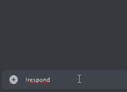

Interaction¶
- class InteractionCallbackType¶
This is located in discord.enums but i place it here.
InteractionCallbackType to react to an
InteractionNAME
VALUE
DESCRIPTION
USAGE
EXAMPLE
- pong¶
1
ACK a
PingACK a Ping to Discord
~
- msg_with_source¶
4
respond to an interaction with a message
Click for example
- deferred_msg_with_source¶
5
ACK an interaction and edit a response later, the user sees a loading state
Possible
response_typefor deferClick for example

- deferred_update_msg¶
6
for components, ACK an interaction and edit the original message later; the user does not see a loading state
Possible
response_typefor deferClick for example

- update_msg¶
7
for components, edit the message the component was attached to
Click for example

- class Interaction¶
Warning
Do not initiate this Class manually
Represents an interaction created in discord like click an
Buttonor select an option ofSelectMenuNote
For general information’s about Interactions visit the Discord-APIMethodes-Documentation of the discord-api.
- author¶
A
Memberthat invoked the interaction. Ifchannelis a private channel or the user has left the guild, then it is aUserinstead.
- message¶
The message the component was attached to. This will be
EphemeralMessageif thecomponent_typeis notNoneor the message the component is attached to isephemeral.Note
In this version, this parameter should always be an object of type
discord.Message(orEphemeralMessageif the message is ephemeral) because it only gets initiated when the interaction_type is higher than 2.
- channel¶
The Channel the interaction was created in this is aiter an object of
discord.TextChannelif it’s inside a guild else it’s an object of typediscord.DMChannel.
- guild¶
The guild associated with the interaction; aiter an object of type
discord.Guild, except the interaction was inside an dm-channel then this would be equal toNone
- component¶
The component that invoked this interaction: Aiter an object of type
ButtonorSelectMenuif the message is not ephemeral else typeButtonClickorSelectionSelectNote
If this is passed in an
[on_][raw_]button_clickor[on_][raw_]selection_selectEvent there would be a second parameter that includes this attribute.
- created_at¶
Returns the Interaction’s creation time in UTC.
- defer(response_type: typing.Literal[5, 6] = InteractionCallbackType.deferred_update_msg, hidden: bool = False)¶
-
‘Defers’ the response.
If
response_typeisInteractionCallbackType.deferred_msg_with_sourceit shows a loading state to the user.- Parameters
response_type – Optional[typing.Literal[5, 6]] The type to response with, aiter
InteractionCallbackType.deferred_msg_with_sourceorInteractionCallbackType.deferred_update_msg(e.g. 5 or 6)hidden –
Optional[bool] Whether to defer ephemerally(only the
authorof the interaction can see the message)Note
Important
If you doesn’t respond with an message using
respond()or edit the original message usingedit()within less than 3 seconds, discord will indicates that the interaction failed and the interaction-token will be invalidated. To provide this us this methodNote
A Token will be Valid for 15 Minutes so you could edit the original
messagewithedit(),respond()or doing anything other with this interaction for 15 minutes. after that time you have to edit the original message with the Methodeeditof themessageand sending new messages with thesendMethode ofchannel(you could not do this hidden as it isn’t an interaction-response anymore)
- edit(**fields)¶
-
Edit the
Messagethe component is attached to, if the interaction is not deferred it will defer automatic.Note
If you have not yet deferred or deferred with type
InteractionCallbackType.deferred_update_msg, edit the message to which the component is attached, otherwise edit the callback message.- Parameters
**fields – The fields of the original message to replace. You could pass the same Parameters as using
discord.Message.edit()
- respond(**kwargs)¶
-
You could pass the same Parameters as using
discord.Messageable.send()but there are one more optional: Responds to an interaction by sending a message that can be made visible only to the person who invoked the interaction by setting thehiddentoTrue.- Parameters
hidden –
Optional[
bool] If set toTrue, the message will be only visible(e.g. ephemeral) for theauthorof the Interaction and will disappears if theauthorclick ondelete this message, the message go out of his view or he reloads the client.Note
If you send an
hidden(ephemeral)-respond, discord don’t returns any data like an message you could edit, but you could receive Interactions when the Author interact with an component in the message.- Returns
Union[
discord.Message,EphemeralMessage]
- class ButtonClick¶
The object that contains a
Interaction.componentif it is of type 2 and the message is ephemeral.
- class SelectionSelect¶
The object containing a
Interaction.componentcontains, if it is of type 3 and the message is ephemeral.- custom_id¶
Union[
str,int]The
custom_idof theSelectMenu. If thecustom_idis a number it is returned as an integer, otherwise a string.
- values¶
List[Union[
str,int]] A list of the options that have been selected. If thevalueis a number it is returned as an integer, otherwise a string
- class EphemeralMessage¶
Since Discord doesn’t return anything when we send a ephemeral message, this class has no attributes and you can’t do anything with it.